Giriş
Hakkında
kazananlar
Giriş
Hakkında
kazananlar
Kazananlar Listesi
Alain Aspect (2022)
incele
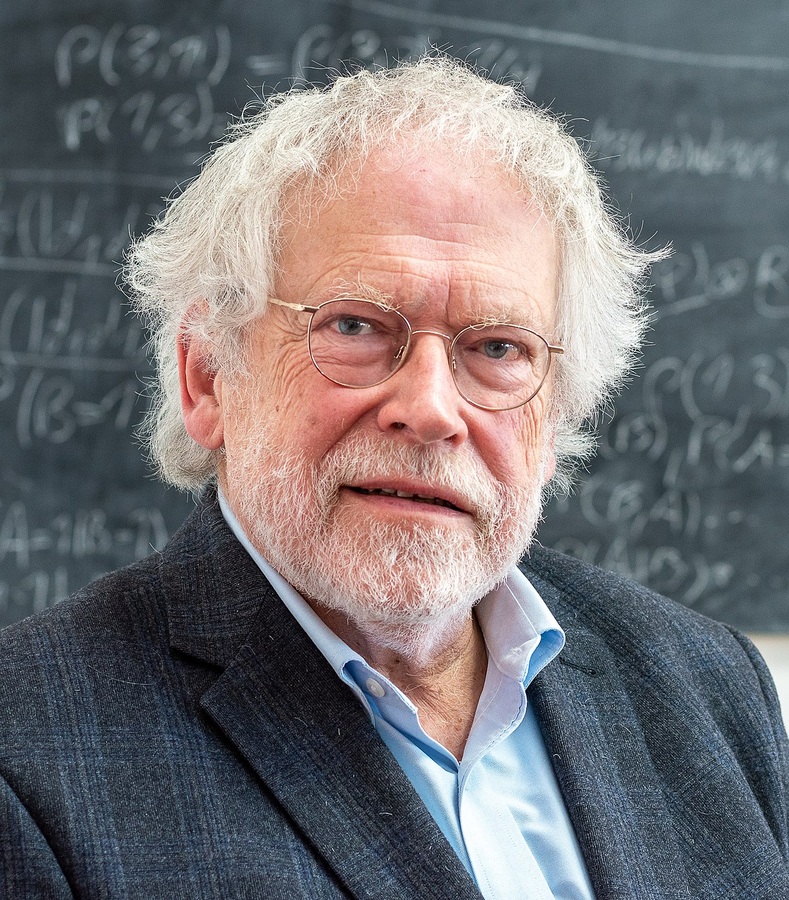
Anton Zeilinger (2022)
incele
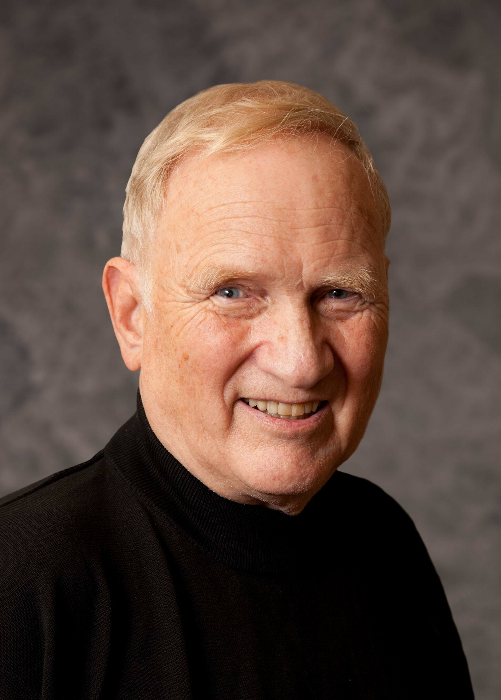
John Clauser (2022)
incele
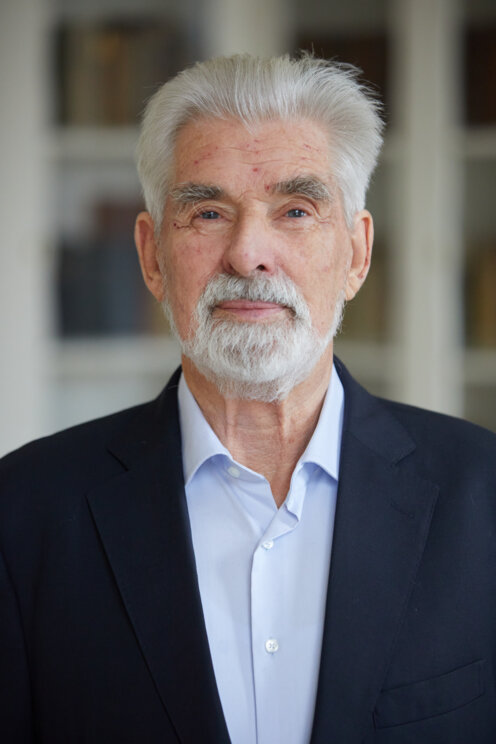
Klaus Hasselmann (2021)
incele
Giorgio Parisi
(2021)
incele
Syukuro Manabe
(2021)
incele
Andrea Ghez
(2020)
incele
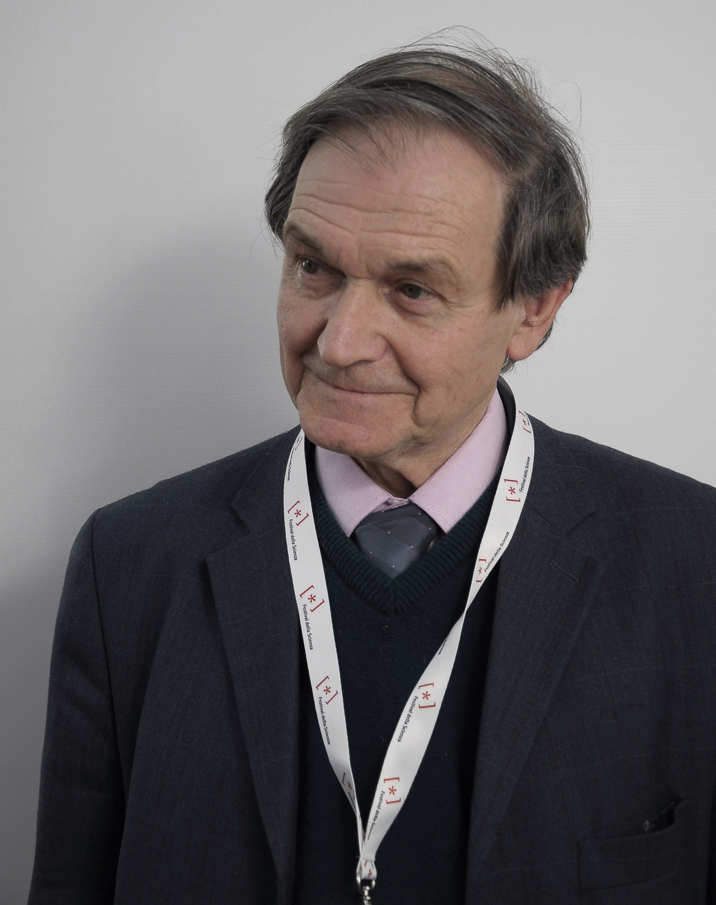
Roger Penrose (2020)
incele
eren mazhar | 11A
Reinhard Genzel
(2020)
Jim Peebles
(2019)
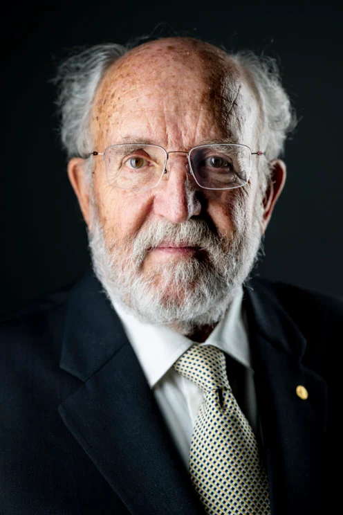
Michel Mayor
(2019)
Didier Queloz
(2019)
Gérard Mourou
(2018)
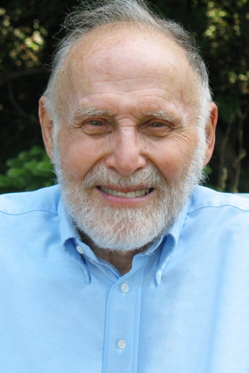
Arthur Ashkin
(2018)
Donna Strickland
(2018)
Kip Thorne
(2017)
Rainer Weiss
(2017)
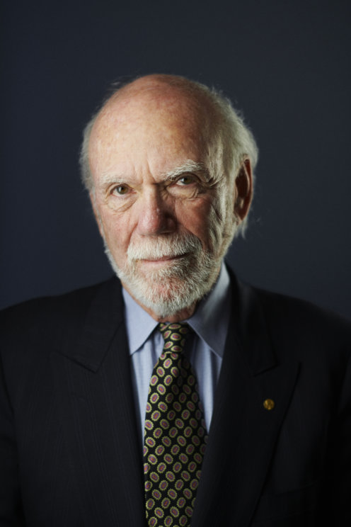
Barry Barish
(2017)
Michael Kosterlitz
(2016)
Duncan Haldane
(2016)
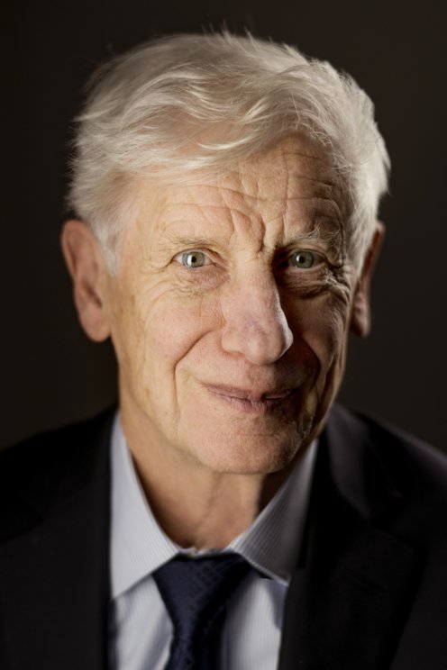
David Thouless
(2016)
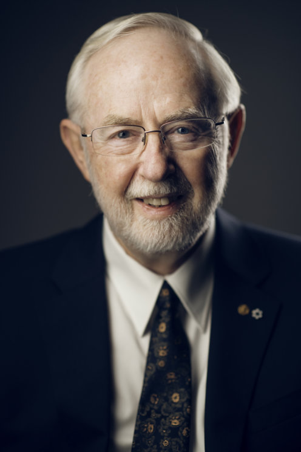
Arthur B. McDonald
(2015)
Takaaki Kajita
(2015)
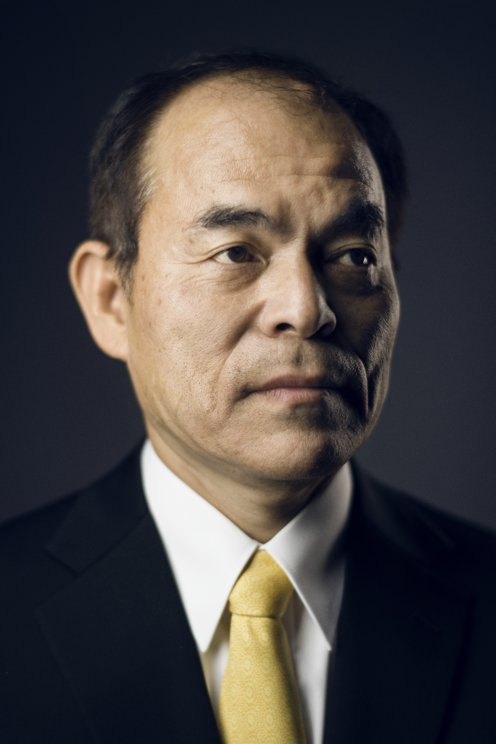
Shuji Nakamura
(2014)
Hiroshi Amano
(2014)
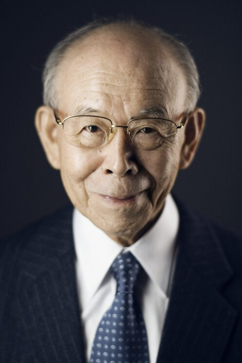
Isamu Akasaki
(2014)
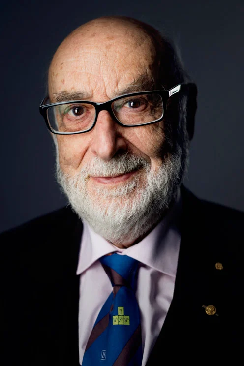
Peter Higgs
(2013)
François Englert
(2013)
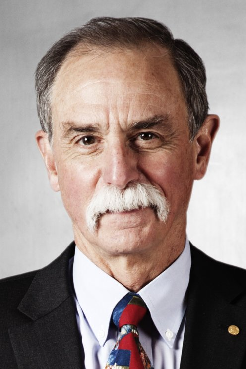
David Wineland
(2012)
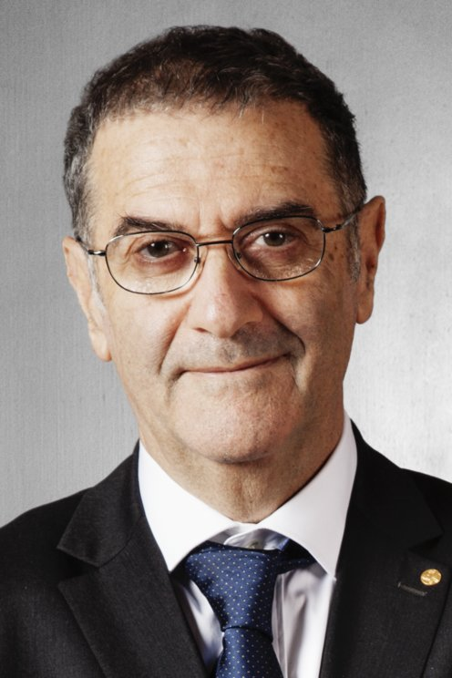
Serge Haroche
(2012)
Adam Riess
(2011)
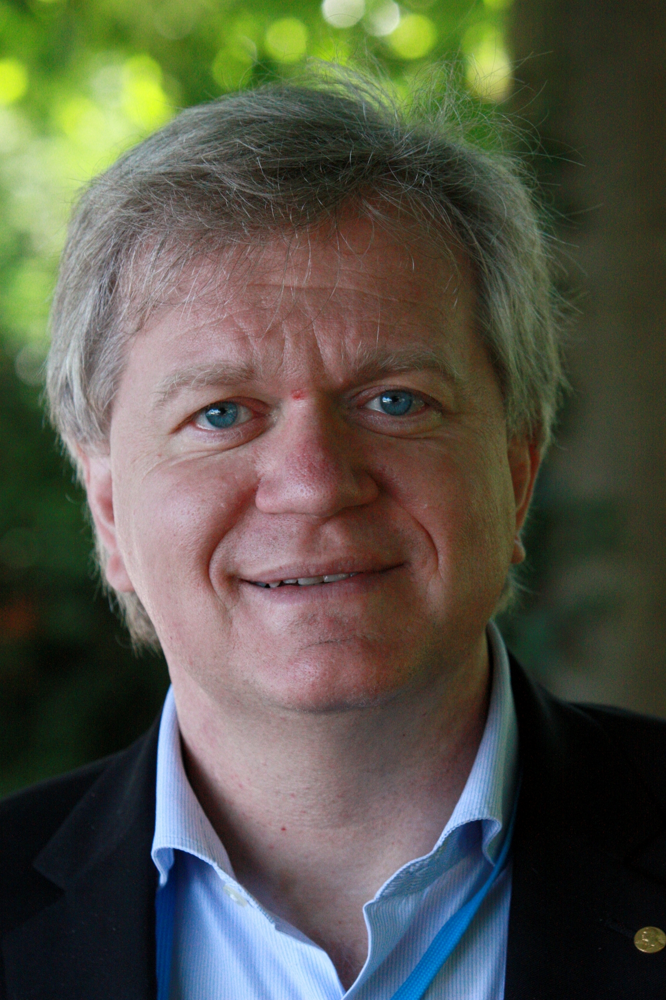
Brian Schmidt
(2011)